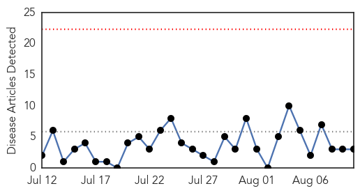
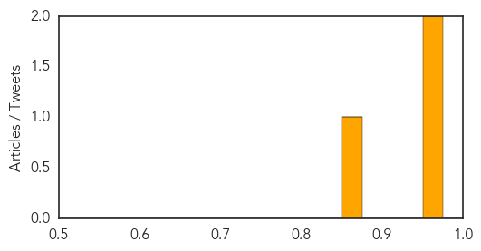

Measles
30-Day Web Trend
0 alerts, 0 warnings

30-Day Twitter Trend
0 alerts, 0 warnings

Article Locations

Article Confidences
Top Articles:
Top Tweets:
-
No tweets found for Aug 10, 2015
Ebola
30-Day Web Trend
1 alerts, 0 warnings

30-Day Twitter Trend
0 alerts, 0 warnings

Article Locations


Article Confidences

Top Articles:
- 1.000
- Sierra Leone's chief Ebola doctor contracts the virus
- 0.999
- Ebola vaccines testing starts in Liberia in partnership between Liberian and US governments
- 0.997
- Proposed Ebola biobank would strengthen African science
- 0.997
- Ebola Survivors Face Depression, Pain And Chronic Medical Conditions, Experts Say
- 0.997
- So far so good as Sierra Leone nears ZERO Ebola infections a day
- 0.996
- Man evaluated for Ebola at Bellevue Hospital
- 0.983
- Survivors suffer joint pains and possible blindness
- 0.981
- Red Alert: Plague outbreak kills 40 in Madagascar out of 119 cases
- 0.980
- Are we prepared for the next global epidemic? The public doesn’t think so - By Jim Yong Kim
- 0.959
- Single dose Ebola vaccine is safe, effective in monkeys against outbreak strain
- 0.946
- China vows to continue support after Ebola outbreak ends
- 0.945
- Taking Caring To Another Level
- 0.939
- Epidemics: Courting controversy
- 0.897
- Page not found
- 0.895
- Downing Street honour for nurse from Whalley Range who volunteered to fight Ebola outbreak
- 0.891
- China pledges continued support for Ebola-hit African nations
- 0.860
- Expanding and Accelerating Response to Calls for Ambulances and Burial Teams for Sierra Leone’s Ebola Outbreak
- 0.837
- China Vows Giving Support to Ebola-suffering Nations in Africa
- 0.833
- China pledges continued support for Ebola-hit Africa nations
- 0.829
- ‘The World Came Late’
- 0.786
- China pledges continued support for Ebola-hit Africa nations
- 0.783
- China’s foreign minister comes with the support of three West African Countries Hit by Ebola
- 0.765
- Case Study: Oxfam Ebola Response, Monrovia The Gaddeh Family – nearly killed by an unreal disease - Liberia
- 0.755
- Chinese FM lauds China-Liberia cooperation in fighting Ebola - Xinhua
- 0.709
- Chinese FM lauds China-Liberia cooperation in fighting Ebola
- 0.640
- China rushes to aid post-Ebola recovery in West Africa
Top Tweets:
- 0.854
- Découvrez aujourd'hui la chanson de Cisse Daouda le 3ème prix de notre concours Africa Stop Ebola: "Stop Ebola... http://t.co/4CavhhYGJL
- 0.814
- Health Department: Person Returning From Guinea Does Not Have Ebola - CBS Local http://t.co/uikvJAMljM ebola EVD
- 0.731
- Sierra Leone celebrates lifting of ban on public gatherings due to Ebola - The Guardian http://t.co/nXZEQe78rj ebola EVD
- 0.635
- Ebola lesson 2: When national capacities are overwhelmed the world must move immediately and decisively to combat emerging health threats.
- 0.576
- China foreign minister pledges continued support to Ebola-hit African nations - U.S. News & World Report http://t.co/8PZcpPGxaB ebola EVD
- 0.553
- Strategy Used for Allergy Medication May Inhibit Ebola - MD Magazine http://t.co/o8NMk24hqc ebola EVD